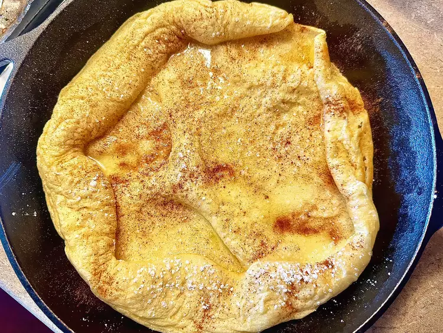

Baked Skillet Pancake

Description
This baked skillet pancake is an old family recipe, and it is not your ordinary pancake. It tastes almost like the elephant ears you get at the fair. So good!
Ingredients
- 4 tablespoons butter
- 1/2 cup all-purpose flour
- 1/2 cup milk
- 2 large eggs
- 1 tablespoon confectioner's sugar, or to taste
- 1/4 teaspoon cinnamon, or to taste
Steps
- Preheat the oven to 450 degrees F (230 degrees C). Place a large cast iron skillet in the oven while preheating.
- Add butter to skillet to melt a few minutes before preheating is complete.
- Whisk flour and milk together in a bowl. Whisk in eggs. Batter will be slightly lumpy.
- Carefully remove skillet from oven; pour batter into the hot skillet over melted butter.
- Return to the oven and bake until lightly golden and crispy around edges, 10 to 15 minutes.
- Dust with confectioner’s sugar and cinnamon, as desired, while still warm.